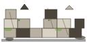

forest r=220
stones r=170
village r=200
ruins r=180
iPhone 14 viewport (half-scale)

Forest 42 items · Stones 22 · Village 14 · Ruins 18. Each region comfortably fills ≥1/4 of a mobile viewport (390×844 overlay shown at bottom-right corner for scale). Items are jittered ±6px per placement; edges naturally feather out. Dashed circles are QA overlays, not rendered in-game.